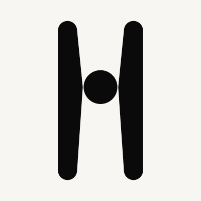
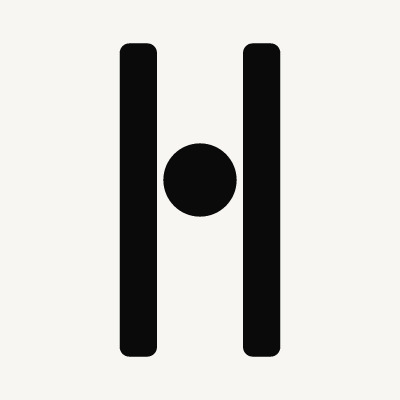
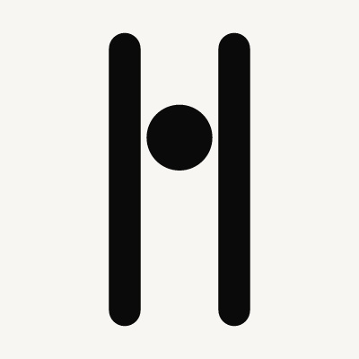

The shipped two-stadiums-plus-centred-sphere is a baseline, not approved. These six are visually distinct from each other and still the 04 family: two members, one suspended sphere, one colour. No glow. Direction 02 only for spacing. Production masters unchanged.


Wordmark is Fraunces, opsz 144, SOFT 0 — the inscriptional stand-in for 04’s Canela. Newsreader is tested below; it is a candidate, not locked.
Closest to the board. Parallel stadiums, 04 occupancy, orb centred. Not over-rationalised.
Waking MatterStanding threshold. Outer foot wider, inner slit parallel, orb suspended in the door.
Waking MatterRitual aperture. Inner faces pinch; the sphere is held at the waist, not pasted.
Waking MatterRecovered, not machined. Heavier left member, orb pulled toward it and slightly high.
Waking MatterWorn caps. Same 04 proportion without the extruded-pill terminals that make a UI H.
Waking MatterLong ritual void. The orb is clearly suspended; the slit below is the character.
Waking MatterThis is where a neat H becomes a letter on a wall, and where an artifact either holds or turns into a diagram.






04’s Canela is thin, high-contrast, archaeological. Fraunces at display optical is the OFL stand-in. Newsreader is the site candidate — softer, more literary. Not locked.
Fraunces · opsz 144, SOFT 0
Waking MatterWaking MatterWaking MatterNewsreader · display optical
Waking MatterWaking MatterWaking MatterIt is the first cut in this family that feels like a recovered threshold rather than a corporate H. Two standing members, a suspended orb in the doorway, a foot that has weight. At architectural scale it is a megalith. At 16px the flare actually helps — there is mass to rasterise. The sphere is held by the gate, not decorating a letter.
1 Source is the closest one-colour of the board, as requested: parallel stadiums, 04 occupancy, orb centred. Keep it in the room. In one colour, without chrome, it still reads as a slender H. That is why we did not stop at the literal reconstruction.
If Flare’s taper feels too far from 04’s parallel members, the fallback is 4 Asym — still stadiums, but recovered rather than machined. 5 Tablet kills the UI-pill caps and stays closest to Source. Do not take 6 High (planet at scale) or 3 Throat (a held sphere, but a gadget). Control remains not approved.
Wordmark: Fraunces, opsz 144, SOFT 0 with Flare. Newsreader is too literary beside a megalith; keep it for article body. Do not freeze type until the mark is chosen.
Production masters in brand/logos/ are unchanged. Do not start Phase B.
Independent review of this sheet is the gate.